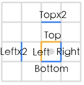
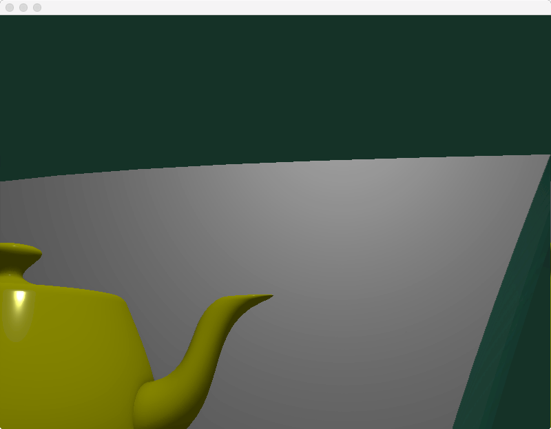
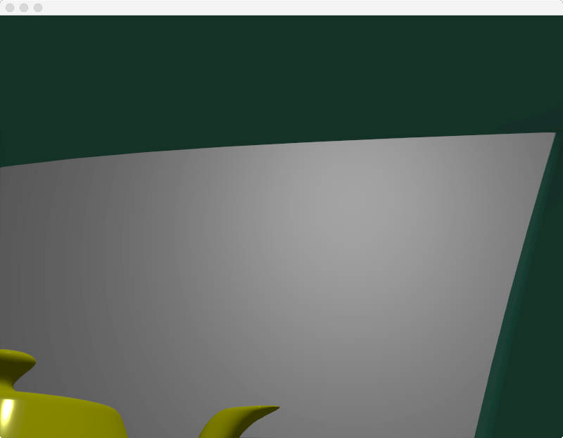

现代抗锯齿技术——PPAA中的新星SMAA
Tags: computer graphics
PPAA
所谓PPAA（Post Process Antialiasing)，也叫FBAA（Filter-Based Antialiasing），是基于后处理的各种抗锯齿技术的统称。在PPAA之前，主流AA技术是MSAA（MultiSamples AA）、SSAA（SuperSamples AA）。SSAA是AA中最暴力也是最完美的解决方案，而MSAA是与硬件紧密结合的built-in AA。对于forward rendering来说，MSAA几乎是唯一的选择。
然而，MSAA这种古老的、built-in的技术，已经不太能满足现代渲染器的需求了。它有两大问题，一是MSAA会有多余的AA计算，二是MSAA不适用于deferred rendering。
鉴于MSAA的不足，PPAA就蓬勃发展起来了。PPAA强大之处在于可以自定义、且硬件无关、兼容forward／defer，所以基于PPAA的算法非常多。而其中的翘楚，SMAA(Subpixel Morphological Antialiasing)，性能以及AA质量都很不错。本文将着重介绍SMAA。
值得一提的是，SMAA的前身是Jimenez's MLAA，也是同一个团队做出来的，SMAA可以认为是在质量和性能两方面都超越Jimenez's MLAA的一个进化版。所以可以先阅读Jimenez's MLAA的论文再来学习SMAA。
SMAA
总共3个pass：
- Pass 1，边缘检测原始图像得到edgesTex
- Pass 2，用edgesTex得到weightTex
- Pass 3，用weightTex混合原始图像，得到抗锯齿图像
边缘检测 Edge Detection
锯齿问题体现在图像上几何物体的边缘处，也就是说，如果能准确地post process出图像上哪些地方是边，哪些地方不是。检测过少，锯齿边就会残留；检测过多，图像就会糊。为来更好地提升AA质量，SMAA边缘检测算法的选取非常关键。
相比基于normal map、depth map，基于颜色的边缘检测尤佳。一是因为，颜色信息容易获得，而深度图／法线图相对难获得，例如对于图像处理领取，用户提供的只有照片而已；二是因为它还有一个优点：对于做了shading后才产生的锯齿，也一样能处理（例如有梯度的toon shading）。
SMAA首推的是基于Luma（亮度）的边缘检测算法。
1，vertex shader，根据纹理坐标输出3组offset，每组2个边，总共6个边要检测：
vec4 SMAA_RT_METRICS = vec4(1.0 / imgSize.x, 1.0 / imgSize.y, imgSize.x, imgSize.y);
Offsets[0] = fma(SMAA_RT_METRICS.xyxy, vec4(-1.0, 0.0, 0.0, -1.0), texCoord.xyxy); // Left / Top Edge
Offsets[1] = fma(SMAA_RT_METRICS.xyxy, vec4( 1.0, 0.0, 0.0, 1.0), texCoord.xyxy); // Right / Bottom Edge
Offsets[2] = fma(SMAA_RT_METRICS.xyxy, vec4(-2.0, 0.0, 0.0, -2.0), texCoord.xyxy); // Leftx2 / Topx2 Edge

2，fragment shader，先求出当前fragment的luma值：
// Calculate lumas:
float3 weights = float3(0.2126, 0.7152, 0.0722);
float L = dot(texture(colorTex, texcoord).rgb, weights);
（RGB->luma的公式来自wiki https://en.wikipedia.org/wiki/Relative_luminance ）
3，算Left和Top的luma值，以及算Left和L的差值delta.x、Top和L的差值delta.y；如果delta.x < threshold.x，edges.x就等于0.0，代表不是边（因为差值很小，即亮度差异小），y方向同理：
float Lleft = dot(texture(colorTex, offsets[0].xy).rgb, weights);
float Ltop = dot(texture(colorTex, offsets[0].zw).rgb, weights);
float4 delta;
delta.xy = abs(L - float2(Lleft, Ltop));
float2 edges = step(threshold, delta.xy);
if (dot(edges, float2(1.0, 1.0)) == 0.0)
discard; // 如果2个方向都没有边，就可以排除这个fragment了
- 如果Left或Top至少有一个是边，就再进一步做检测。
// 计算Right Bottom的luma差值
float Lright = dot(texture(colorTex, offsets[1].xy).rgb, weights);
float Lbottom = dot(texture(colorTex, offsets[1].zw).rgb, weights);
delta.zw = abs(L - float2(Lright, Lbottom)); // 和算delta.xy过程差不多
// 分别算出x、y方向的最大luma差值
float2 maxDelta = max(delta.xy, delta.zw);
// 算出 Left x2 and Top x2 的luma:
float Lleftleft = dot(texture(colorTex, offsets[2].xy).rgb, weights);
float Ltoptop = dot(texture(colorTex, offsets[2].zw).rgb, weights);
// 算出Left和Left x2的luma差值、Top和Top x2的luma差值
delta.zw = abs(float2(Lleft, Ltop) - float2(Lleftleft, Ltoptop));
// Calculate the final maximum delta:
// x、y方向分别最终的最大luma差值
maxDelta = max(maxDelta.xy, delta.zw);
// x、y两个方向中取其中最大的luma差值
float finalDelta = max(maxDelta.x, maxDelta.y);
// Local contrast adaptation:
float SMAA_LOCAL_CONTRAST_ADAPTATION_FACTOR = 2.0;
// Left、Top亮度差值*2后需超过finalDelta才真的是边
edges.xy *= step(finalDelta, SMAA_LOCAL_CONTRAST_ADAPTATION_FACTOR * delta.xy);
return edges;
权重混合计算 Blending Weight Calculation
最复杂的一个pass
模式处理
SMAA的模式处理较之MLAA有了新的改进。MLAA的方法，对sharp物体的轮廓的"边角"和"锯齿角"并不能区分（都认为是交叉角crossing edges），导致边角也被当作锯齿角处理，导致边角被修成了圆角。而SMAA中，做了进一步的观察：对于锯齿角，大小不超过一个像素，而sharp的边角很大几率超过1个像素。
因此，SMAA判断锯齿角需要计算2个像素长度的范围，也从而识别出真的边角。
(待续)
最终效果
原始图像:

经过SMAA 1x过滤后:
